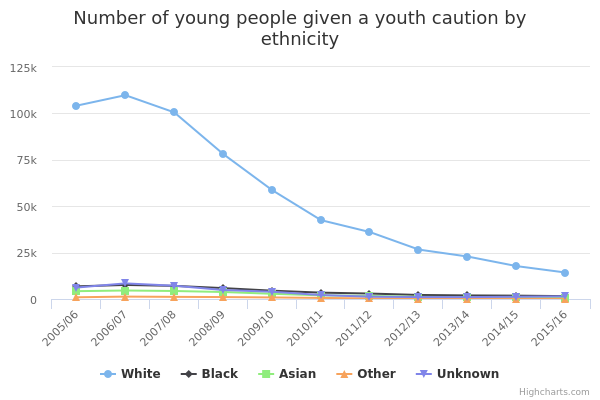

Youth cautions
The main facts and figures show that:
-
in 2015/16, police gave 18,048 youth cautions, and the ethnicity of the young person who was cautioned was recorded for 16,613 of them (92%)
-
in 2015/16, White young people received 14,269 youth cautions, which is 86% of all youth cautions where ethnicity was recorded
-
in 2015/16, police gave youth cautions to 1,545 Black young people, which is 9% of all youth cautions where ethnicity was recorded
-
from 2005/06 to 2015/16, the total number of youth cautions given fell by 85% (from 122,300 to 18,048), but the relative proportion by ethnicity stayed broadly the same, with a slight decrease in White young people (from 90% to 86%) and a slight increase in Black young people (from 6% to 9%) over that period
Things you need to know
Before 8 April 2013, police gave reprimands and final warnings to young people aged 10 to 17, but they were replaced on that date with youth cautions and youth conditional cautions. In this data, reprimands, final warnings and youth conditional cautions are all treated as though they were youth cautions.
If a young person is cautioned for 2 or more offences at the same time, the police officer will only record the more serious offence (the ‘principal’ offence) in the PNC.
The total figures for youth cautions include young people whose ethnicity is not recorded in the PNC. However, in every time period reported in this data, ethnicity has been recorded for at least 92% of cautions.
Ethnicity is identified and recorded by the police officer giving the caution, based on appearance, and is not self-defined by the young person. Ethnicity has been consistently recorded in 4 broad categories: White, Black, Asian and Other (including Chinese).
What the data measures
This data measures the number of youth cautions given to young people aged 10 to 17.
The figures are taken from the Police National Computer (PNC). The PNC holds details of all convictions and cautions given for ‘recordable offences’. A recordable offence is an offence that the law says must be recorded on the PNC. It includes some offences where it is not possible for offenders to be sentenced to prison or other custody, and it excludes motoring offences.
Ethnicity is identified and recorded by the police officer giving the caution.
Why these ethnic categories were chosen
The analysis used the following 4 broad ethnic categories:
- White
- Black
- Asian
- Other (which includes Chinese and other ethnic groups)
Ethnicity is identified and recorded by the police officer giving the caution based on the appearance of the young person being cautioned, rather than the individual reporting their own ethnicity, as is usually the case.
Young people given youth cautions by ethnicity

View the numbers in a table
Young people given youth cautions by ethnicity
| White | Black | Asian | Other | Unknown | |
| 2005/06 | 104,147 | 6,820 | 4,216 | 927 | 6,172 |
|---|---|---|---|---|---|
| 2006/07 | 109,818 | 7,569 | 4,578 | 1,284 | 8,411 |
| 2007/08 | 100,552 | 7,081 | 4,314 | 1,154 | 7,157 |
| 2008/09 | 78,124 | 5,867 | 3,775 | 1,040 | 4,850 |
| 2009/10 | 58,689 | 4,484 | 2,812 | 839 | 3,910 |
| 2010/11 | 42,484 | 3,429 | 1,977 | 593 | 2,131 |
| 2011/12 | 36,061 | 2,940 | 1,649 | 315 | 1,248 |
| 2012/13 | 26,626 | 2,179 | 1,157 | 233 | 1,056 |
| 2013/14 | 22,872 | 1,930 | 998 | 190 | 1,025 |
| 2014/15 | 17,719 | 1,809 | 866 | 137 | 1,210 |
| 2015/16 | 14,269 | 1,545 | 706 | 93 | 1,435 |
Summary
This data shows that:
-
in 2015/16, police gave 14,269 youth cautions to White young people, which is 86% of all youth cautions where ethnicity was recorded
-
in 2015/16, police gave youth cautions to 1,545 Black young people, which is just under 9% of all youth cautions where ethnicity was recorded
-
from 2005/06 to 2015/16, the total number of youth cautions fell by 85%, from 122,300 to 18,048 cautions
-
from 2005/06 to 2015/16, the proportion of youth cautions by ethnicity stayed broadly the same, with only a slight decrease in White young people (from 90% in 2005/06 to 86% in 2015/16) and a slight increase in Black young people (from 6% to 9%)
-
from 2005/06 to 2015/16, the proportion of youth cautions given to young people from Asian and Other ethnicities stayed constant at 4% and 1% respectively
-
in the last 2 recorded years (2014/15 and 2015/16), the total number of youth cautions given fell by 17% (from 21,700 to 18,048), but the proportions of White and Black young people cautioned were the same in both years
Methodology and data type
Purpose Of Data Source
Admin data used for internal management information
Methodology
The figures are taken from the Police National Computer (PNC). The PNC holds details of all convictions and cautions given for ‘recordable offences’. A recordable offence is an offence that the law says must be recorded on the PNC. It includes some offences where it is not possible for offenders to be sentenced to prison or other custody, and it excludes motoring offences.
The PNC may be subject to some error arising from data entry and processing. The data for January to March 2016 is provisional and may change.
Admin data sources reported as recorded. As with all large administrative data sources, some inherent inaccuracy may exist.
Data type
Admin data
Type of statistic
National statistic
Suppression rules
None required
Further technical information
Publishing details
-
Ministry of Justice
-
26 January 2017
-
26 January 2017
-
25 January 2018
-
Annually